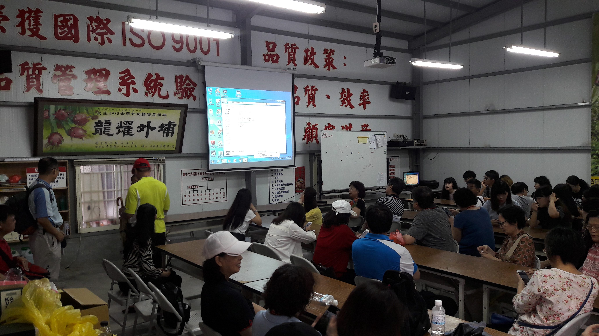

社群簡介
創新教學內容亮點
經驗分享
本計畫最主要的宗旨是希望透過校內跨院科系、跨區域、跨校的教學工作者的對話與交流，並結合學術研究與民間文史工作者，摸索出更容易為新世代年輕學生所接受的教學方式與教學內容。結合的學術研究專長有史學史、影視史、台灣史、數位內容科技、空拍專家等不同背景，涵蓋本校人文學院、理學院及友校教師，並有民間蒐藏家、影像工作者，進行不同型式的講座教學活動。傳統歷史研究著重在文字敘述留下的史料，如此一來便侷限了研究素材與研究對象；20世紀以來，新的歷史觀念逐漸萌芽，強調多元史觀，更希望利用不同的元素來探究歷史。透過本計畫的執行，期望能帶給學生「看得見的歷史」。

教學目標
 執行策略
執行策略

活潑、創新教學
本次計畫著重於教學活動的活潑化與創新上，設定以帶領學子了解臺中舊城區的歷史發展及相關影視、歷史資料庫的活用為主軸，除了傳統的文獻導讀、經驗分享，也透過專題實作、戶外參訪，激發參與學生的學習興趣。並結合校內外資源與徵詢相關校內夥伴意見。

整合校內外資源
參與成員上，除包含本系師生、外校教師、外系同學外，邀請民間的文史工作者、文物收藏家、空拍專家等一同推動課程計畫的進行，受惠學生包含本系及外系學生，是一次寶貴的教學經驗。

跨域合作，汲取教學經驗
透過此次的多元教學活動，與跨領域的諸多專家夥伴建立起合作的友誼，有助於日後推動相關領域的課程活動。

隨時隨地檢討成長
在教學設計的過程中，主持人須隨時檢討並調整課程設計，較傳統的教學活動耗時更多，惟自身也透過不同的教學設計有所成長。